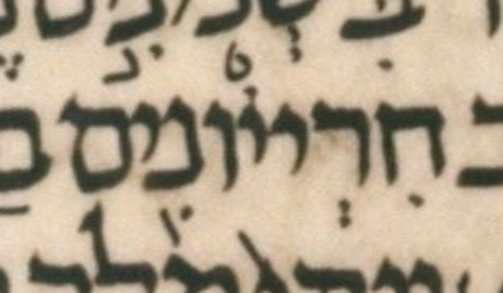

| bcv (link to tanach.us) | 2k6:25 |
| MPK | חִרְייֹונִ֖ים |
| qere | דִּבְיוֹנִ֖ים |
| at issue | דּ |
| at issue English | added a dagesh to dalet |
| folio col line | 206B 1 11 |
The MPK’s ח does not carry a dagesh for the qere’s ד, perhaps because that would be illegal.
The ḥolam malei dot on the qere’s vav comes from the (illegal) ḥolam (ḥaser?) dot on the second yod of the MPK!
Instead of being on the second yod of the MPK, why isn’t this dot on the vav of the MPK?
In other words, instead of חִ רְ י יֹ ו נִ֖ י ם, why isn’t the MPK חִ רְ י י וֹ נִ֖ י ם? (I have spaced out the letters for clarity.)
More regarding the odd placement of this dot: the last five letters of ketiv and qere, יונים, are in common between ketiv and qere. So why not point them in the MPK as they are in the (implied) qere?
Yet another way of stating this question: I see the ketiv/qere variation in this word as restricted to the prefixes as חרי and דב respectively. So in the common suffix יונים, i.e. after that variation, why should the MPK be any different than the (implied) qere?